弹出“安装程序已经在运行”窗口，VISIONAssembly程序正在运行，请先关闭软件在进行安装。
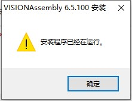
弹出“操作系统版本过低，请升级到win7 Service Pack 1或者联系VISIONAssembly开发人员”窗口，请使用win7以上版本的操作系统安装软件。
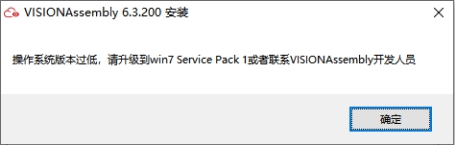
弹出“请在64位操作系统下运行”窗口，使用的是64位安装包，不能安装在32位系统上，请使用64位win7以上系统或者获取32位安装包。
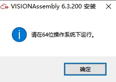
下面三种安装软件服务失败，请将“C:\Windows\System32”手动设置到系统环境变量中，并以管理员权限重新安装软件，重新安装失败请联系我们。
第一种：弹出“GvCacheService服务运行失败，请重新安装软件！”窗口，文件清理服务安装失败。
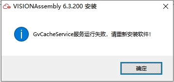
第二种：弹出" GvFileService服务运行失败，请重新安装软件！"窗口，文件存储服务安装失败。
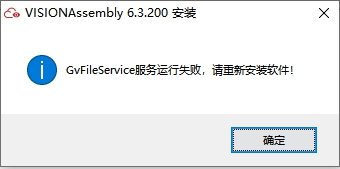
第三种：弹出" GvWatchdog服务运行失败，请重新安装软件！"窗口，文件保存监控服务安装失败。
弹出“已存在加密狗驱动进程，手动终止进程或重启电脑，再重装软件！”窗口，需要手动终止加密狗驱动进程（senseshield.exe）或重启电脑后，尝试重装软件。
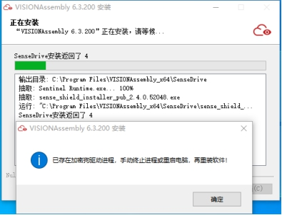
弹出“加密狗驱动安装文件丢失，请确认关闭安全卫士、杀毒软件等，再重装软件！”窗口，加密狗驱动安装文件在安装时，可能被360、腾讯电脑管家、2345等安全卫士、杀毒软件、桌面小助手一系列软件误删，关闭此类软件后，尝试重装软件。
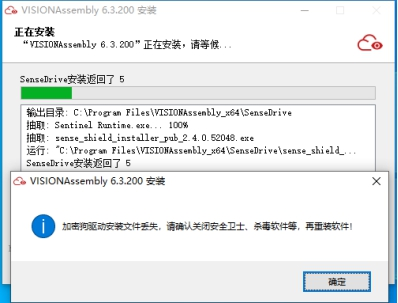
弹出“驱动安装失败，请确认关闭安全卫士、杀毒软件等，再重装软件！”窗口，加密狗驱动安装文件在安装时，可能被360、腾讯电脑管家、2345等安全卫士、杀毒软件、桌面小助手一系列软件拦截，关闭此类软件后，尝试重装软件。
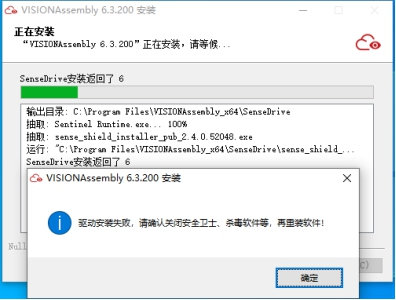
弹出“加密狗驱动或服务安装失败，请联系凌云光！”窗口，可以先不要点击“确定”，按照下面步骤进行检测修复。
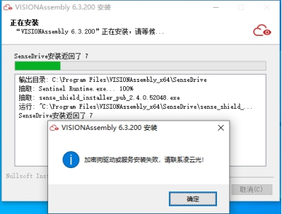
第一步：进入VISIONAssembly安装路径，以管理员权限打开“加密狗修复工具.exe”
第二步：关闭杀毒软件、安全卫士等软件。点击“一键检测修复”，可有效检测如下常见问题：
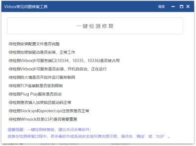
第三步：检测结果如下，说明没有此类问题，请联系我们排查问题。
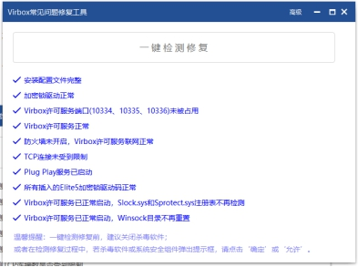
弹出“未安装VISIONAssembly软件，不能使用此组件的安装包！”窗口，扩展包安装前需要安装与其版本相同的主软件包，请先安装主软件包后，重新安装扩展包。
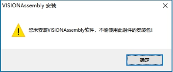
弹出“对不起，XX扩展包只针对XXX版本的VISIONAssembly软件”窗口，扩展包版本需要与主软件包相同，请选择与主软件包相同的扩展包进行安装。
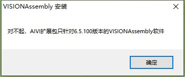